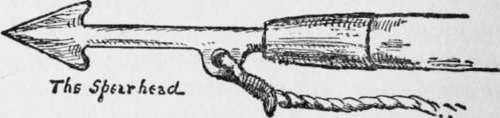

Spearing The Great Sturgeon
Description
This section is from the book "The Book Of Woodcraft", by Ernest Thompson Seton. Also available from Amazon: The Book of Woodcraft.
Spearing The Great Sturgeon
This water game is exceedingly popular and is especially good for public exhibition, being spectacular and full of amusement and excitement.
The outfit needed is:
(1) A sturgeon roughly formed of soft wood; it should be about three feet long and nearly a foot thick at the head. It may be made realistic, or a small log pointed at both ends will serve.
(2) Two spears with six-inch steel heads and wooden handles (about three feet long). The points should be sharp, but not the barbs. Sometimes the barbs are omitted altogether. Each head should have an eye to which is attached twenty feet of one-quarter-inch rope. On each rope, six feet from the spearhead, is a fathom mark made by tying on a rag or cord.
(3) Two boats with crews. Each crew consists of a spearman, who is captain, and one or two oarsmen or pad-dlers, of which the after one is the pilot. All should be expert swimmers or else wear life belts during the game.
The Game
Each boat has a base or harbor; this is usually part of the shore opposite that of the enemy; or it obviates all danger of collision if the boats start from the same side. The sturgeon is left by the referee's canoe at a point midway between the bases. At the word "Go!" each boat leaves its base and, making for the sturgeon, tries to spear it, then drag it by the line to the base. When both get their spears into it the contest becomes a tug of war until one of the spears pulls out.
The sturgeon is landed when the prow of the boat that has it in tow touches its proper base, even though the spear of the enemy is then in the fish: or it is landed when the fish itself touches base if it is also in tow at the time. The boats change bases after each heat.
Matches are usually for one, three, or five sturgeon. Points are counted only for the landing of the fish, but the referee may give the decision on a foul or a succession of fouls, or the delinquent may be set back one or more boat-lengths.
Sometimes the game is played in canoes or boats, with one man as spearman and crew.
Rules
It is not allowed to push the sturgeon into a new position with the spear or paddle before striking.
It is allowed to pull the sturgeon under the boat or pass it around by using the line after spearing.
It is allowed to lay hands on the other boat to prevent a collision, but otherwise it is forbidden to touch the other boat or crew or paddle or spear or line, or to lay hands on the fish or to touch it with the paddle or oar, or touch your own spear while it is in the fish, or to tie the line around the fish except so far as this may be accidentally done in spearing.
It is allowed to dislodge the enemy's spear by throwing your own over it. The purpose of the barbs is to assist in this.
It allowed to run on to the sturgeon with the boat.
It is absolutely forbidden to throw the spear over the other boat or over the heads of your crew.
In towing the sturgeon the fathom-mark must be over the gunwale - at least six feet of line should be out when the fish is in tow. It is not a foul to have less, but the spearman must at once let it out if the umpire or the other crew cries "Fathom!"
The spearman is allowed to drop the spear and use the paddle or oar at will, but not to resign his spear to another of the crew. The spearman must be in his boat when the spear is thrown.
If the boat is upset the judge's canoe helps them to right.
Each crew must accept the backset of its accidents.
Canoe Tag
Any number of canoes or boats may engage in this. A rubber cushion, a hot-water bag full of air, any rubber football, or a cotton bag with a lot of corks in it is needed. The game is to tag the other canoe by throwing this into it.
The rules are as in ordinary cross-tag.
Scouting
Scouts are sent out in pairs or singly. A number of points are marked on the map at equal distances from camp, and the scouts draw straws to see where each goes. If one place is obviously hard, the scout is allowed a fair number of points as handicap. All set out at same time, go direct, and return as soon as possible.
Points are thus allowed:
Last back, zero for traveling.
The others count one for each minute they are ahead of the last.
Points up to 100 are allowed for their story on return.
Sometimes we allow 10 points for each Turtle they have seen; 10 for each Owl seen and properly named; 5 for each Hawk, and 1 each for other wild birds; also 2 for a Cat; 1 for a Dog.
No information is given the Scout; he is told to go to such a point and do so and so, but is fined points if he hesitates or asks how or why, etc.
Continue to:
Tags
bookdome.com, books, online, free, old, antique, new, read, browse, download